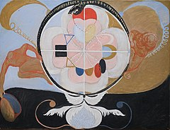

Early life
Hilma af Klint was born in Karlberg Palace, Solna, Sweden on October 26, 1862. She was an artist and mystic known for her groundbreaking abstract paintings. She is considered by many to be the first artist to focus on abstract imagery in the Western world.
Influences
Klint was inspired by nature, botany, mathematics, and spirituality. She attended the Royal Academy of Fine Arts in the last 1800s. At this time, her public-facing work focused on landscapes and portrait paintings while in Klint's personal time, she was creating the artwork for which she is known today. It wasn't until after her death that the work she's regarded for today was seen by the public.
Spiritism
The passing of Klint's sister led her to delve into the realm of spiritism. Spiritism was a timely movement that incorporated a variety of beliefs regarding the afterlife into one doctrine. It includes ideas based on science, philosophy, Christianity, the Theosophical Movement, and more. Spiritism was hugely influential in Klint's personal life and art. Klint and her group of fellow artists called "The Five" regularly carried out séances and shared their beliefs on spiritism, religion, and philosophy.
Work
Through these practices, Hilma af Klint created abstract paintings and automatic drawings, amalgamating her beliefs and artistic abilities into a cohesive visual language made up of geometric forms, fields of color, and intuitive mark-making all meant to express experiences beyond human comprehension.
Legacy
Klint died at age 81 on October 21, 1944, in Danderyd, Sweden. There has been a resurgence of interest in her work in recent years and it truly speaks to the strength of her abilities and concepts that her art has grown in relevance even decades after her passing.